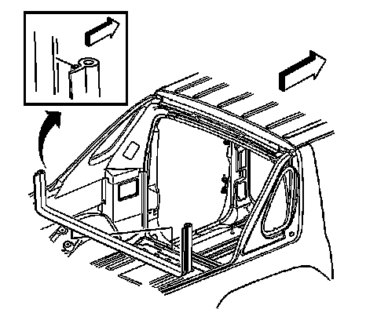

Rear Compartment Access Door Weatherstrip Replacement
Rear Compartment Access Door Weatherstrip Replacement
Removal Procedure

1. Fold down the rear seat.
2. Remove the rear removable glass panel.
3. Remove the midgate. Refer to Midgate Replacement .
4. Starting from one end remove the weatherstrip from the vehicle.
Installation Procedure
Important: To begin the installation of the weatherstrip, ensure the weatherstrip is at a minimum of 21�C (70�F).
1. Starting from one end of the weatherstrip, install the weatherstrip.
2. Ensure the corners of the weatherstrip are fully seated.
3. Install the midgate. Refer to Midgate Replacement .
4. Close the midgate.
5. Install the rear removable rear glass panel.
6. Inspect the weatherstrip when the midgate is closed and the glass panel installed.
7. Set the rear seat in the upright position.